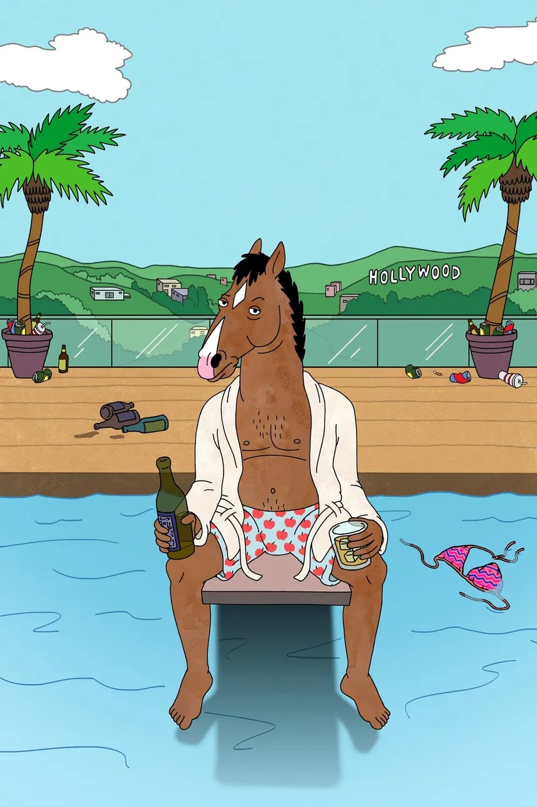
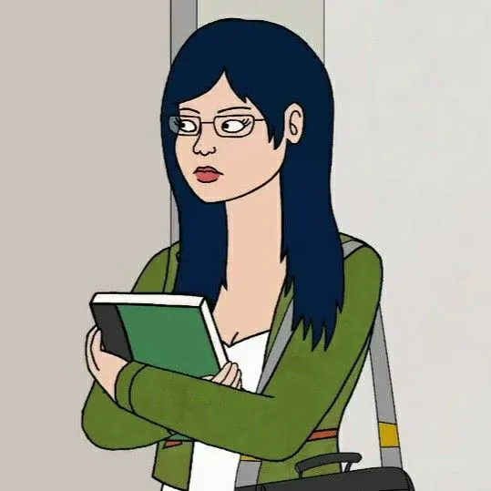
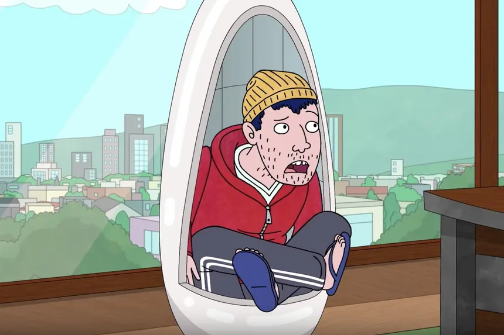

BoJack Horseman:
BoJack es un caballo que alcanzó la fama en los años noventa con la telecomedia Horsin' Around, el único éxito de su carrera. Desde que su programa fue cancelado, BoJack ha vivido abrumado por la frustración, el resentimiento y el odio a sí mismo.
Diane Nguyen:
Diane es la escritora fantasma que redacta la autobiografía de BoJack Horseman. Es una mujer vietnamo-americana de Boston, feminista de tercera ola e intelectual incomprendida que vive con su pareja, el actor y antigua estrella de telecomedias Mr. Peanutbutter.
Todd Chávez:
Joven de 24 años sin trabajo ni propósitos en la vida, que se instaló en casa de BoJack después de una fiesta. Al no ser capaz de conseguir que se marchara, Todd vive gratis en el sofá de su sala desde hace cinco años. Aunque pueda parecer que BoJack lo desprecia, en realidad mantiene una relación de dependencia y siempre hará lo posible para que Todd esté cerca de él.